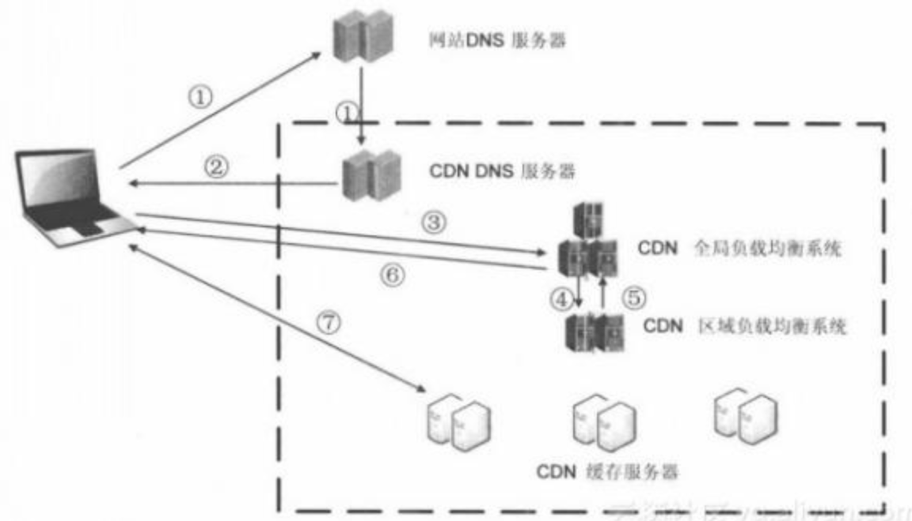
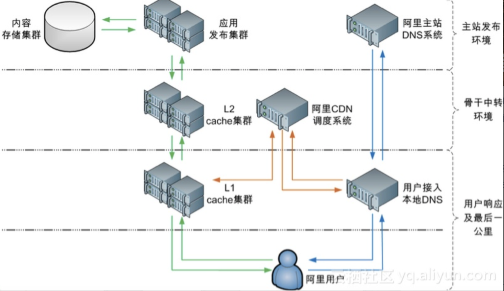

CDN基本功能
（1）带宽优化。自动生成服务器的远程Mirror（镜像）cache服务器，远程用户访问时从cache服务器上读取数据，减少远程访问的带宽、分担网络流量、减轻原站点服务器负载。
（2）远程加速。远程访问用户根据DNS负载均衡技术智能自动选择Cache服务器，选择最快的Cache服务器，加快远程访问的速度。
（3）本地Cache加速。服务商能使用Web Cache技术PULL资源，在本地缓存用户访问过的Web页面和对象，实现相同对象的访问无须占用主干的出口带宽，并提高用户访问因特网页面的相应时间的需求；
（4）集群抗攻击。广泛分布的CDN节点加上节点之间的智能冗余机制，可以有效地预防黑客入侵以及降低各种D.D.o.S攻击对网站的影响，同时保证较好的服务质量
（5）镜像服务。消除了不同运营商之间互联的瓶颈造成的影响，实现了跨运营商的网络加速，保证不同网络中的用户都能得到良好的访问质量，能克服网站分布不均的问题，并且能降低网站自身建设和维护成本；
（6）异地备援。当某个服务器发生意外故障时，系统将会调用其他临近的健康服务器节点进行服务，进而提供接近100%的可靠性，这就让你的网站可以做到永不宕机。
关键技术
内容发布
它借助于建立索引、缓存、流分裂、组播（Multicast）等技术，将内容发布或投递到距离用户最近的远程服务点（POP）处。
内容分发包含从内容源到CDN边缘的Cache的过程。从实现上，有两种主流的内容分发技术：PUSH和PULL。
PUSH是一种主动分发的技术。通常，PUSH由内容管理系统发起，将内容从源或者中心媒体资源库分发到各边缘的 Cache节点。分发的协议可以采用 Http/ftp等。通过PUSH分发的内容一般是比较热点的内容，这些内容通过PUSH方式预分发（ Preload）到边缘Cache，可以实现有针对的内容提供。对于PUSH分发需要考虑的主要问题是分发策略，即在什么时候分发什么内容。一般来说，内容分发可以由CP（内容提供商）或者CDN内容管理员人工确定，也可以通过智能的方式决定，即所谓的智能分发，它根据用户访问的统计信息，以及预定义的内容分发的规则，确定内容分发的过程PULL是一种被动的分发技术，PULL分发通常由用户请求驱动。当用户请求的内容在本地的边缘 Cache上不存在（未命中）时， Cache启动PUL方法从内容源或者其他CDN节点实时获取内容。在PULL方式下，内容的分发是按需的。
内容路由
它是整体性的网络负载均衡)技术，通过内容路由器中的重定向（DNS）机制，在多个远程POP上均衡用户的请求，将用户的请求导向整个CDN网络中的最佳节点。
全局负载均衡主要的目的是在整个网络范围内将用户的请求定向到最近的节点（或者区域）。因此，就近性判断是全局负载均衡的主要功能。本地负载均衡一般局限于一定的区域范围内，其目标是在特定的区域范围内寻找一台最适合的节点提供服务，因此，CDN节点的健康性、负载情况、支持的媒体格式等运行状态是本地负载均衡进行决策的主要依据。
内容存储
对于CDN系统而言，需要考虑两个方面的内容存储问题。一个是内容源的存储，一个是内容在 Cache节点中的存储。
对不同格式的支持，根据不同文件格式的读写特点进行优化，读写提速，合理设计内容碎片。
Cache存储的可靠性，目前，多数存储系统都采用了独立磁盘冗余阵列（RAID）技术进行可靠存储。
内容管理
它通过内部和外部监控系统，获取网络部件的状况信息，测量内容发布的端到端性能（如包丢失、延时、平均带宽、启动时间、帧速率等），保证网络处于最佳的运行状态。
CDN架构的基本形式

阿里云CDN架构
